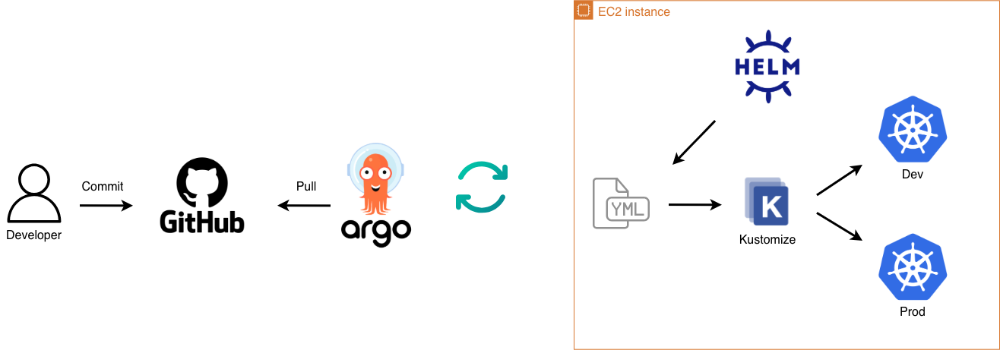
Deliver a scalable, and maintainable DevOps foundation that is fully automated. The system uses Infrastructure as Code to provision everything from GitLab runners to the Kubernetes cluster, ensuring consistent results and rapid, reliable releases. Find the repository here.
The k3s cluster orchestrates microservices exposed via a Traefik ingress controller. Path-based routing dynamically directs external traffic to operational interfaces (ArgoCD, Kibana) and application components (Frontend, Backend). A decoupled data crawler operates as a periodic CronJob, independently writing to the backend MySQL database to ensure background batch processing does not impact user-facing API performance.
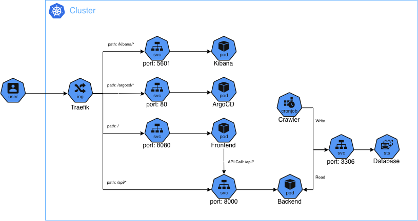
Golden AMIs (Amazon Machine Images) are baked for both the GitHub Actions runners and the k3s cluster. All dependencies, tools, and orchestration components are included at image build time, enabling deterministic boots, faster startup, and zero configuration drift during runtime.
Terraform composes all infrastructure—runners, Kubernetes nodes, networking, and registries—while Packer standardizes machine images. The result is a repeatable pipeline for building, deploying, and operating the entire stack, from infrastructure to application workloads.
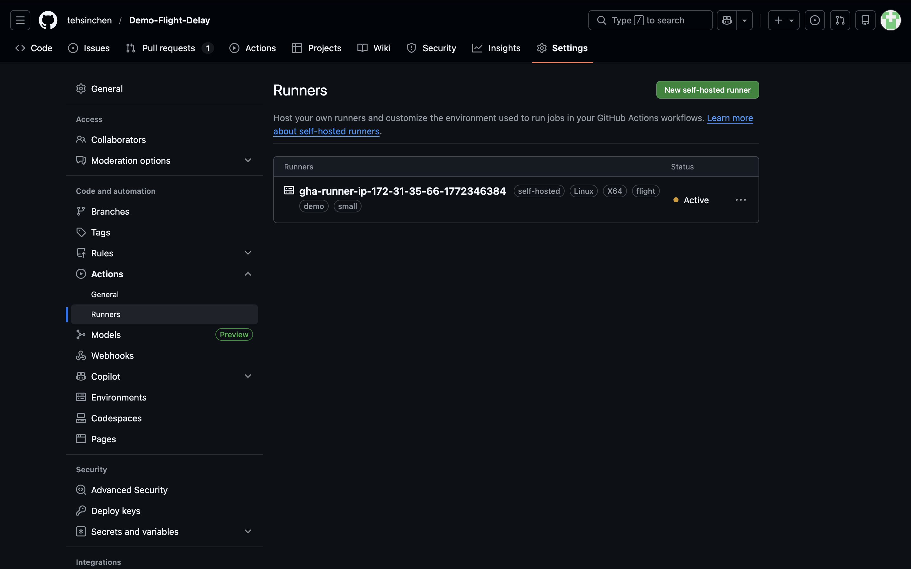
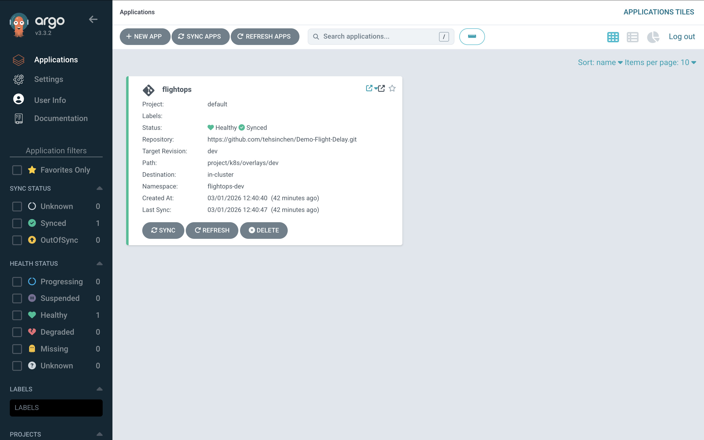
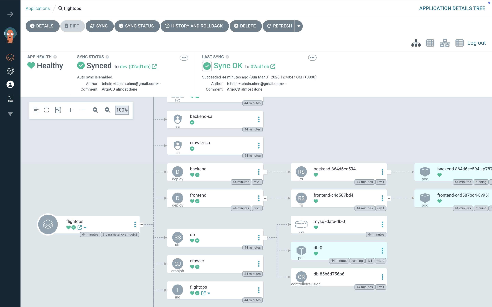
A hybrid configuration approach maximizes reusability while maintaining environment parity. A local Helm chart acts as the single source of truth, managing base manifests and conditional resource toggling. Kustomize natively inflates this chart during the build phase to seamlessly apply environment-specific overlays (such as resource limits and replica counts). This delivers the advanced templating power of Helm without sacrificing Kustomize's clean patch management.
ArgoCD is embedded into the Kubernetes AMI and automatically bootstraps applications from the GitHub repository on launch. Sync behavior is tuned with ApplyOutOfSyncOnly, which ensures only out‑of‑sync resources are reconciled, keeping changes intentional and auditable.
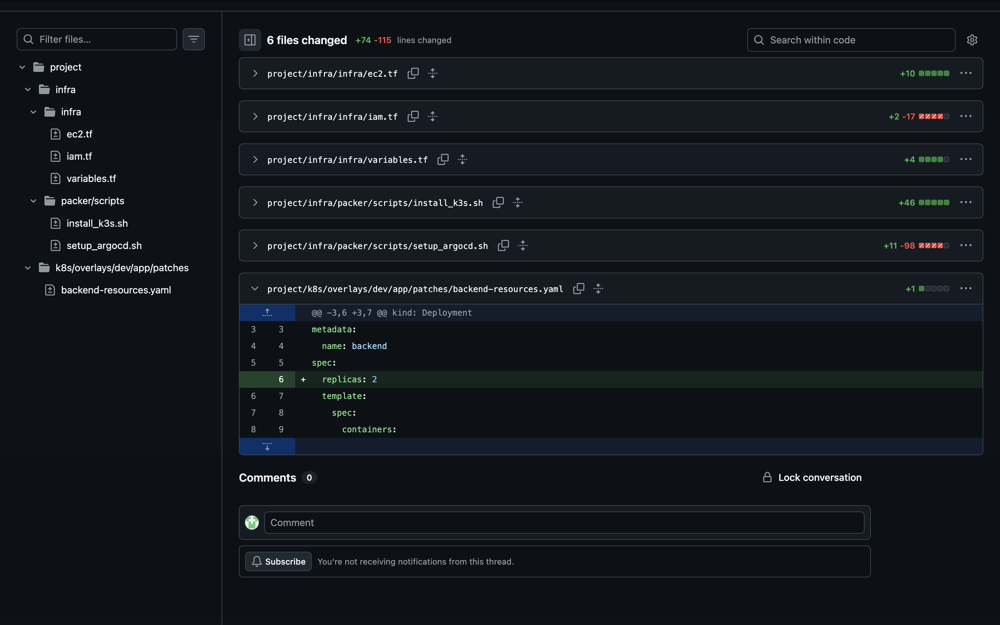
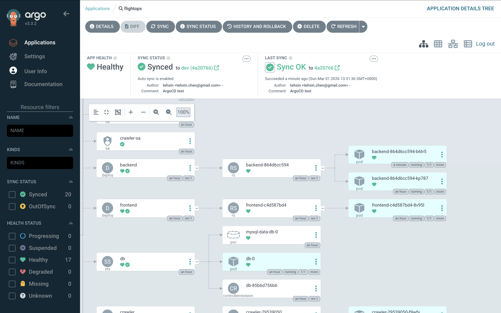
Operational health is proactively monitored through an integrated ELK stack (Elasticsearch, Kibana, Fluent-bit). Fluent-bit operates as a DaemonSet, utilizing a custom Lua script to dynamically compute Elasticsearch index prefixes based on Kubernetes namespaces and application labels, ensuring clean data separation across environments.
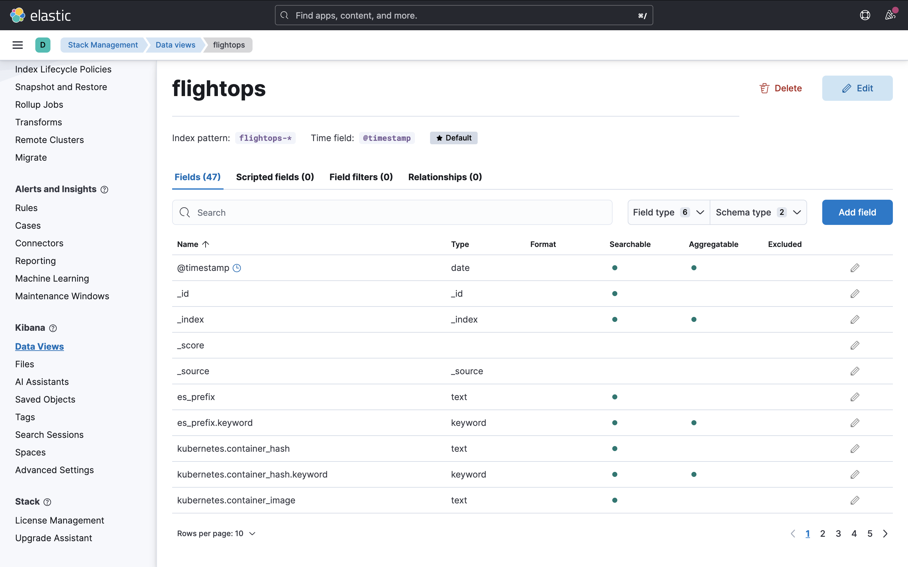
Kibana visualizes this aggregated data through tailored operational dashboards. Custom visualizations include microservice log volume distribution to spot anomalous traffic, time-series error rate tracking isolated strictly to stderr streams, and dedicated execution ledgers for batch CronJobs. This comprehensive visibility enables rapid anomaly detection and precise troubleshooting.
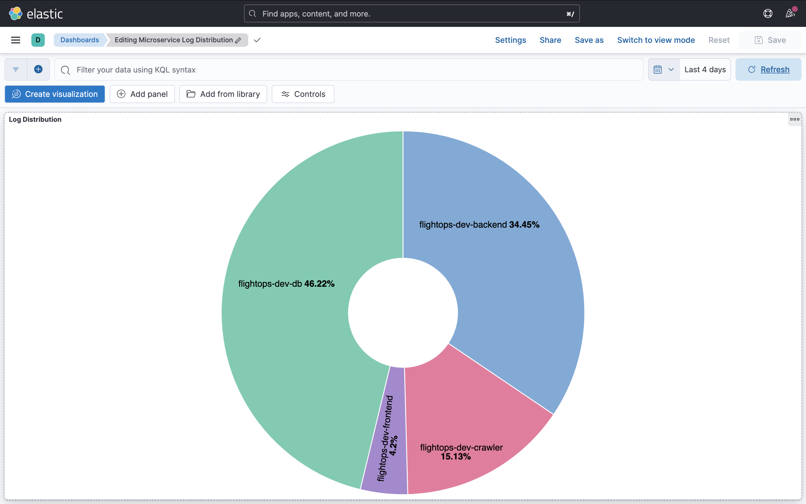
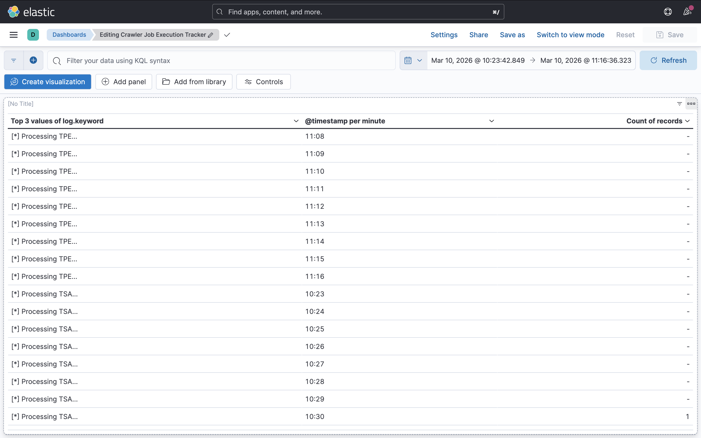
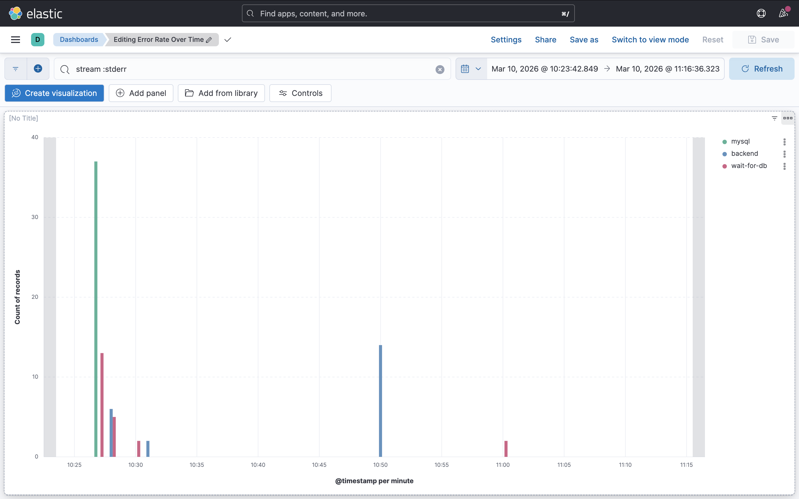